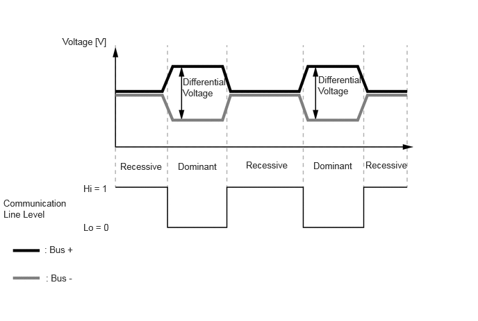

| Last Modified: 10-07-2025 | 6.11:8.1.0 | Doc ID: NM100000002GB1F |
| Model Year Start: 2024 | Model: Tacoma | Prod Date Range: [12/2023 - ] |
| Title: NETWORKING: MULTIPLEX COMMUNICATION SYSTEM [AVC-LAN]: GENERAL; 2024 - 2026 MY Tacoma Tacoma HV [12/2023 - ] | ||
GENERAL
GENERAL
(a) Audio Visual Communication-Local Area Network (AVC-LAN) communication, which communicates with the audio system, is used as a multiplex communication system* to simplify vehicle wire harnesses and achieve high-speed communication.
AVC-LAN Specifications
|
Protocol |
Specifications |
|---|---|
|
Communication Speed |
17.8 kbps |
|
Communication Wire |
Twisted-pair Wire |
|
Drive Type |
Differential Voltage Drive |
|
Data Length |
0 - 32 Byte (Variable) |
HINT:
*: The multiplex communication system connects several ECUs together with one communication line so that they can exchange data with each other. As a result, additional wiring is not required when integrating systems and adding functions.
(b) Communication Wire
(1) A twisted pair of wires is used for AVC-LAN communication.
|
Communication Wire |
Outline |
|
|---|---|---|
|
Twisted-pair Wire |
 |
This communication wire is a pair of twisted wires. Communication is driven by applying different voltages to the 2 lines in order to send a single signal. This system, which is called a "differential voltage drive", reduces noise. |

(c) AVC-LAN communication consists of two communication lines (buses), bus+ and bus-. The system uses the differential voltage of the communication lines to determine the communication line level* and transmits a digital signal using an exclusive communication protocol (communication rules).
HINT:
*: The communication line level has a dominant level and a recessive level, and the AVC-LAN communication logically calculates the dominant level as "0" and the recessive level as "1".
(d) AVC-LAN Communication Protocol (Communication Rules)
(1) The AVC-LAN communication system makes it possible to send data by offsetting the timing at which each device uses the communication line so that one communication line is shared by all parts that make up the network. In order to do so, communication is performed according to a communication protocol (communication rules) that is shared by the ECUs. This communication protocol helps communication be performed smoothly and securely.
(2) The AVC-LAN communication protocol uses the Carrier Sense Multiple Access with Collision Detection (CSMA/CD) protocol* as the rules for sending data via the communication line. This protocol allows all devices to share one communication line while retaining the right to start sending data.
HINT:
*: This is a type of communication access control where devices constantly detect the condition of the communication line and only send data when no other data is being sent. In addition, when the system detects that a data collision has occurred (data was simultaneously sent from another device), it waits for a certain period of time before resending the data.
(e) Signals sent and received via AVC-LAN communication are sent to the CAN bus via ECUs connected to the CAN bus.